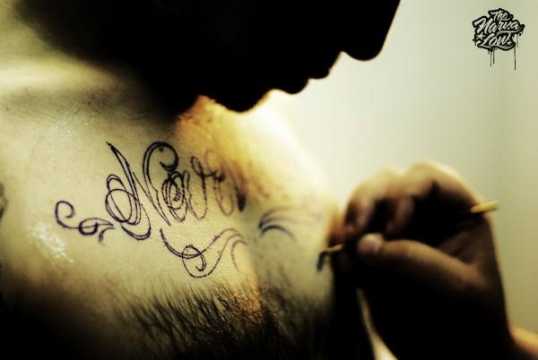
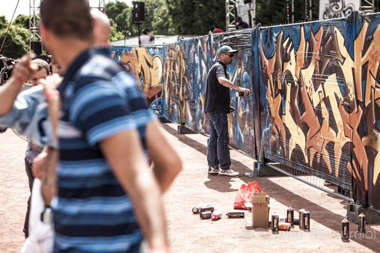

association narvalow club
Narvalo, narvali & Narvalito (pour les bambins) : fou, qui n'a peur de rien.
Un mot issu de l'argot gitan, qui s'est répandu dans le langage urbain jusqu'à faire parti du langage courant. Fort de sa mentalité débrouillarde, le Narvalow Club mixe, croise et expérimente dans le but de valoriser les cultures urbaines à travers des actions de sensibilisation et la création d'événements urbains transdisciplinaires. Le Narvalow Club fonde sa démarche sur la possibilité d’inscrire les projets qu’il défend non dans la qualification restrictive de « cultures de quartier » mais dans celle de culture pour tous. C’est en 2009, lors d’une rencontre fortuite entre Swift Guad, rappeur originaire de Montreuil, et One.P, graphiste parisien, que nait spontanément l’idée cette entité hybride et passionné : le Narvalow Club.
-

-

- 
temps forts
Le Narvalow Club est avant tout une structure qui accueille des projets artistiques de tous horizons. Tatouage, Street Art, couture, gravure, séri-graphie, musique, peinture, graphisme ou encore photographie alimentent les événements passés et à venir. Le sens de l’art (2009), The new narvalow order (2010), We are the W (2011), La mort ne connait pas la crise (2012), Narvaloween, Narvalow Freak Show (2009 & 2013), …sont autant d’événements marquants vécus comme de véritables rassemblements humain. Des rassemblements propices à l’échange, aux rencontres et à la naissance de nouveaux projets.
L’un des temps fort orchestré par l’association, c’est le Narvalow City Show. Un marathon hip hop en plein air dont le pari est de réunir les disciplines qui façonnent la culture hip hop. Le Narvalow City Show est avant tout une célébration. Un événement humain, festif et indépendant consacré aux cultures urbaines et le territoire de Montreuil en est le cœur.
Des activistes hip-hop de tous horizons et de toutes disciplines, reconnus ou émergeants, participent à cette grand-messe estivale conçue et encadrée par une équipe de 10 bénévoles.
Depuis sa création en 2010,le festival à accueilli plus de 5000 spectateurs.
A terme, l’ambition de l’association est d’étendre la programmation du festival sur un week-end en consacrant un temps fort au jeune public (Narvalitow City Show) tout en mettant en place une véritable dynamique d’échange et d’ouverture (projections, tables rondes, initiations …) à destination des habitants de Montreuil et des environs autour de l’actualité du hip-hop et des cultures urbaines.
-

- 
-

narvalow city show 2015
Samedi 4 juillet 2015 / midi – minuit
Lieu : Stade Robert Barran / 21 rue des roches / Montreuil
Accès : Mairie de Montreuil (m°9) / Bus 121 «Acacia»
Rap - Graff – Djing – Beatboxing - Low rider (avec Mad Ridaz Crew) - Tattoo session (avec Ozer) - Food + Drink - Clothing market - Show Street Dance (avec Hold Up Team) & bien d’autres surprises.
Team rap : Scred Connexion ‡ Busta Flex ‡ Deen Burbigo ‡ Kacem Wapalek ‡ Swift Guad ‡ Vald ‡ Taïpan ‡ le Gouffre ‡ Kenyon ‡ Lyricson ‡ Rocca ‡ Jp Manova ‡ Beny le Brownies ‡ la Jungle ‡ A2H ‡ Paco ‡ Lacraps ‡ la Race Canine ‡ Digital Bastard ‡ Exepoq Organisation ‡ Camelia pand’or ‡ le Bon Nob ‡ Fizzi Pizzi ‡ Youssef Swatt’s ‡ Leo Sevyor ‡ la Smala ‡ l’Hexaler ‡ Team Paname ...
Le tout mixé par Dj Enygm, le Swinging Monkey Crew & ambiancé par Milky Way !
Team graff : Vision ‡ Lost ‡ Chek ‡ Rude ‡ Dibz ‡ Swit ‡ Silk ‡ Modem ‡ Komo ‡ Kanos ‡ Brok ...
Tattoo : Venez vous faire tatouer sur place par Ozer. Renseignements et réservation : ozer.ths@hotmail.fr
Tarifs
Entrée seule :
15€ sur place / 12€ en prévente
Contact
Tel : 06 02 10 58 47 / 06 25 33 83 21
Email : narvalowclub.communication@gmail.com
Adresse de l'Asso : Association Narvalow Club / 18, rue Rochebrune 93100 Montreuil